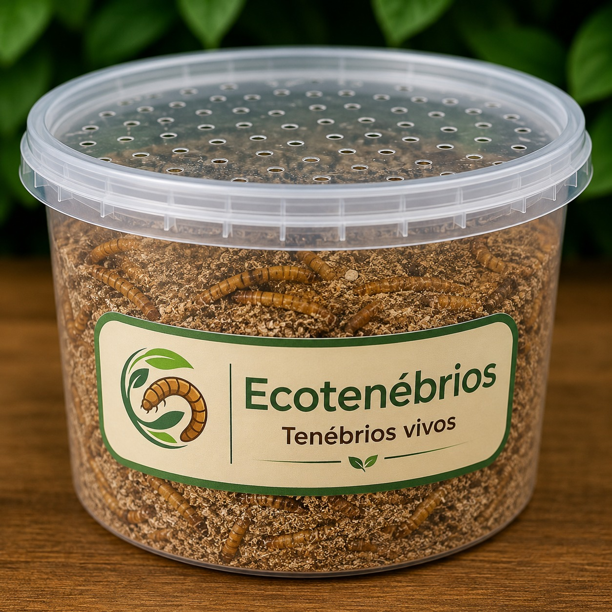

Kit Premium Tenébrios Vivos
R$ 49,90
/ com frete grátis
- ✨ Larvas vivas ativas e selecionadas
- 📦 Embalagem térmica ventilada exclusiva
- 🚚 Frete Grátis para todo o Brasil
- 🛡️ Garantia de chegada 100% vivos